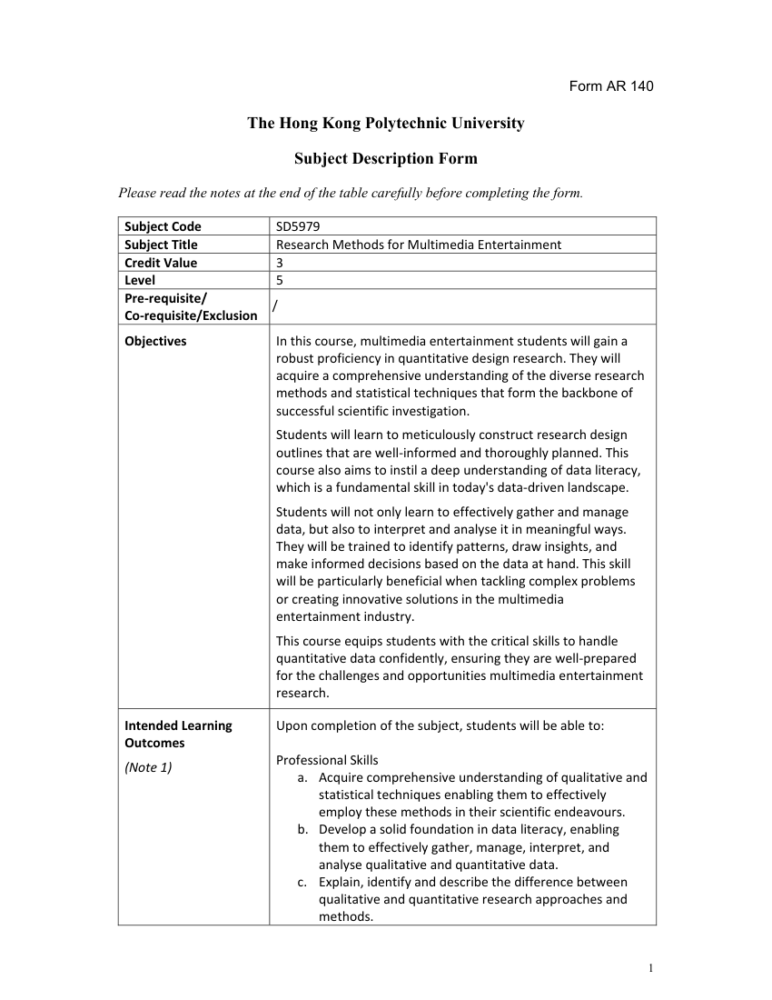
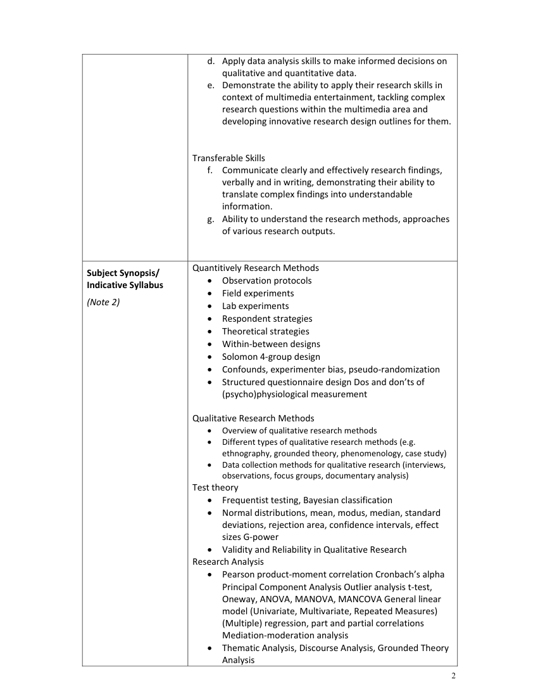
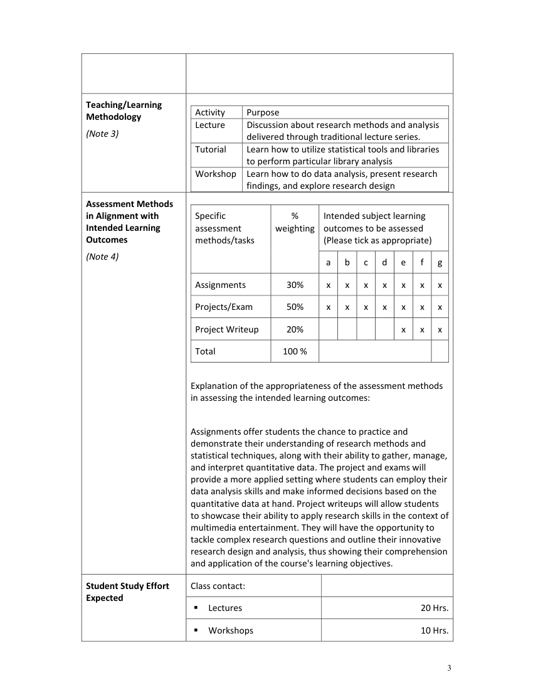
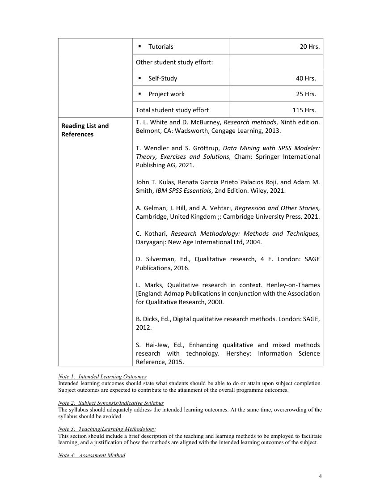

L00 · 5 PAGES
Research methods 2026 08 27 course description
原图在上、中文对照在下；研究课词汇已加粗高亮。左右滑动或点底部按钮切换页面。


香港理工大学 课程说明表（Form AR 140: Subject Description Form）
填写本表格前，请仔细阅读表格末尾的注释。
- 课程代码（Subject Code）：SD5979
- 课程名称（Subject Title）：多媒体娱乐研究方法（Research Methods for Multimedia Entertainment）
- 学分（Credit Value）：3
- 课程级别（Level）：5
- 先修／同修／互斥课程（Pre-requisite / Co-requisite / Exclusion）：/
课程目标（Objectives）
在本课程中，多媒体娱乐专业的学生将在量化设计研究（quantitative design research）方面获得扎实的能力。他们将全面理解构成成功科学研究（scientific investigation）支柱的多元研究方法（research methods）与统计技术（statistical techniques）。
学生将学习细致地构建充分知情且周密规划的研究设计纲要（research design outlines）。本课程还旨在培养学生对数据素养（data literacy）的深刻理解——这是当今数据驱动环境中一项基础能力。学生不仅将学习如何有效地收集与管理数据，还将学习如何以有意义的方式解读与分析数据。他们将接受训练，以识别模式、提炼洞见，并基于手头数据做出有依据的决策（make informed decisions）。这一能力在应对多媒体娱乐行业中的复杂问题或创造创新解决方案时尤为有益。
本课程赋予学生自信处理量化数据（quantitative data）的关键技能，确保他们为多媒体娱乐研究中的挑战与机遇做好充分准备。
预期学习成果（Intended Learning Outcomes，Note 1）
完成本课程后，学生将能够：
专业技能（Professional Skills）
a. 全面理解质性与统计技术（qualitative and statistical techniques），从而能够在其科学研究工作（scientific endeavours）中有效运用这些方法。
b. 建立扎实的数据素养（data literacy）基础，从而能够有效地收集、管理、解读与分析质性与量化数据（qualitative and quantitative data）。
c. 解释、识别并描述质性与量化研究取径与方法（qualitative and quantitative research approaches and methods）之间的差异。
查看英文提取原文
1 Form AR 140 The Hong Kong Polytechnic University Subject Description Form Please read the notes at the end of the table carefully before completing the form. Subject Code SD5979 Subject Title Research Methods for Multimedia Entertainment Credit Value 3 Level 5 Pre-requisite/ Co-requisite/Exclusion / Objectives In this course, multimedia entertainment students will gain a robust proficiency in quantitative design research. They will acquire a comprehensive understanding of the diverse research methods and statistical techniques that form the backbone of successful scientific investigation. Students will learn to meticulously construct research design outlines that are well-informed and thoroughly planned. This course also aims to instil a deep understanding of data literacy, which is a fundamental skill in today's data-driven landscape. Students will not only learn to effectively gather and manage data, but also to interpret and analyse it in meaningful ways. They will be trained to identify patterns, draw insights, and make informed decisions based on the data at hand. This skill will be particularly beneficial when tackling complex problems or creating innovative solutions in the multimedia entertainment industry. This course equips students with the critical skills to handle quantitative data confidently, ensuring they are well-prepared for the challenges and opportunities multimedia entertainment research. Intended Learning Outcomes (Note 1) Upon completion of the subject, students will be able to: Professional Skills a. Acquire comprehensive understanding of qualitative and statistical techniques enabling them to effectively employ these methods in their scientific endeavours. b. Develop a solid foundation in data literacy, enabling them to effectively gather, manage, interpret, and analyse qualitative and quantitative data. c. Explain, identify and describe the difference between qualitative and quantitative research approaches and methods.


d. 运用数据分析（data analysis）技能，针对质性与量化数据（qualitative and quantitative data）做出有依据的决策（make informed decisions）。
e. 展示在多媒体娱乐语境下运用研究技能的能力，应对多媒体领域内复杂的研究问题（research questions），并为其制定创新的研究设计纲要（research design outlines）。
可迁移技能（Transferable Skills）
f. 以口头与书面形式清晰有效地传达研究发现（research findings），展示将复杂发现转化为易于理解之信息的能力。
g. 具备理解各类研究成果所采用之研究方法（research methods）与研究取径的能力。
课程大纲／参考教学大纲（Subject Synopsis / Indicative Syllabus，Note 2）
量化研究方法（Quantitively Research Methods）
- 观察方案（Observation protocols）
- 田野实验（Field experiments）
- 实验室实验（Lab experiments）
- 受访者策略（Respondent strategies）
- 理论策略（Theoretical strategies）
- 被试内—被试间设计（Within-between designs）
- 所罗门四组设计（Solomon 4-group design）
- 混淆因素（Confounds）、主试偏差（experimenter bias）、伪随机化（pseudo-randomization）
- 结构化问卷设计（Structured questionnaire design）；（心理）生理测量（(psycho)physiological measurement）的注意事项（Dos and don’ts）
质性研究方法（Qualitative Research Methods）
- 质性研究方法（qualitative research methods）概述
- 不同类型的质性研究方法（qualitative research methods）（例如：民族志（ethnography）、扎根理论（grounded theory）、现象学（phenomenology）、个案研究（case study））
- 质性研究（qualitative research）的数据收集方法（Data collection methods）（访谈（interviews）、观察（observations）、焦点小组（focus groups）、文献分析（documentary analysis））
检验理论（Test theory）
- 频率主义检验（Frequentist testing）、贝叶斯分类（Bayesian classification）
- 正态分布（Normal distributions）、均值（mean）、众数（modus）、中位数（median）、标准差（standard deviations）、拒绝域（rejection area）、置信区间（confidence intervals）、效应量（effect sizes）、G-power
- 质性研究（Qualitative Research）中的效度（Validity）与信度（Reliability）
研究分析（Research Analysis）
- 皮尔逊积矩相关（Pearson product-moment correlation）、克龙巴赫 α（Cronbach’s alpha）、主成分分析（Principal Component Analysis）、异常值分析（Outlier analysis）、t 检验（t-test）、单因素（Oneway）、方差分析（ANOVA）、多元方差分析（MANOVA）、多元协方差分析（MANCOVA）、一般线性模型（General linear model）（单变量（Univariate）、多变量（Multivariate）、重复测量（Repeated Measures））、（多元）回归（(Multiple) regression）、半偏相关（part correlations）与偏相关（partial correlations）、中介—调节分析（Mediation-moderation analysis）
- 主题分析（Thematic Analysis）、话语分析（Discourse Analysis）、扎根理论分析（Grounded Theory Analysis）
查看英文提取原文
2 d. Apply data analysis skills to make informed decisions on qualitative and quantitative data. e. Demonstrate the ability to apply their research skills in context of multimedia entertainment, tackling complex research questions within the multimedia area and developing innovative research design outlines for them. Transferable Skills f. Communicate clearly and effectively research findings, verbally and in writing, demonstrating their ability to translate complex findings into understandable information. g. Ability to understand the research methods, approaches of various research outputs. Subject Synopsis/ Indicative Syllabus (Note 2) Quantitively Research Methods Observation protocols Field experiments Lab experiments Respondent strategies Theoretical strategies Within-between designs Solomon 4-group design Confounds, experimenter bias, pseudo-randomization Structured questionnaire design Dos and don’ts of (psycho)physiological measurement Qualitative Research Methods Overview of qualitative research methods Different types of qualitative research methods (e.g. ethnography, grounded theory, phenomenology, case study) Data collection methods for qualitative research (interviews, observations, focus groups, documentary analysis) Test theory Frequentist testing, Bayesian classification Normal distributions, mean, modus, median, standard deviations, rejection area, confidence intervals, effect sizes G-power Validity and Reliability in Qualitative Research Research Analysis Pearson product-moment correlation Cronbach’s alpha Principal Component Analysis Outlier analysis t-test, Oneway, ANOVA, MANOVA, MANCOVA General linear model (Univariate, Multivariate, Repeated Measures) (Multiple) regression, part and partial correlations Mediation-moderation analysis Thematic Analysis, Discourse Analysis, Grounded Theory Analysis


教学与学习方法（Teaching/Learning Methodology，Note 3）
- 讲授（Lecture）：通过传统系列讲座讨论研究方法（research methods）与分析（analysis）。
- 辅导课（Tutorial）：学习如何使用统计工具与程序库（statistical tools and libraries）来执行特定的程序库分析（library analysis）。
- 工作坊（Workshop）：学习如何进行数据分析（data analysis）、呈现研究发现（research findings）以及探索研究设计（research design）。
与预期学习成果相对应的评估方法（Assessment Methods in Alignment with Intended Learning Outcomes，Note 4）
具体评估方法／任务、权重百分比及拟评估的预期课程学习成果（请酌情勾选）：
- 作业（Assignments）：权重 30%｜拟评估预期学习成果：a、b、c、d、e、f、g
- 项目／考试（Projects/Exam）：权重 50%｜拟评估预期学习成果：a、b、c、d、e、f、g
- 项目书面报告（Project Writeup）：权重 20%｜拟评估预期学习成果：e、f、g
- 总计（Total）：100%
评估方法在评估预期学习成果方面的适切性说明：
作业为学生提供练习并展示其对研究方法（research methods）与统计技术（statistical techniques）之理解的机会，同时也展现其收集、管理与解读量化数据（quantitative data）的能力。项目与考试将提供更具应用性的情境，使学生能够运用其数据分析（data analysis）技能，并基于手头的量化数据（quantitative data）做出有依据的决策（make informed decisions）。项目书面报告将让学生在多媒体娱乐语境下展示其运用研究技能的能力。他们将有机会应对复杂的研究问题（research questions），并勾勒出创新的研究设计（research design）与分析（analysis），从而体现其对本课程学习目标的理解与应用。
学生预期学习投入（Student Study Effort Expected）
课堂接触学时（Class contact）：
- 讲授（Lectures）：20 小时
- 工作坊（Workshops）：10 小时
查看英文提取原文
3 Teaching/Learning Methodology (Note 3) Activity Purpose Lecture Discussion about research methods and analysis delivered through traditional lecture series. Tutorial Learn how to utilize statistical tools and libraries to perform particular library analysis Workshop Learn how to do data analysis, present research findings, and explore research design Assessment Methods in Alignment with Intended Learning Outcomes (Note 4) Specific assessment methods/tasks % weighting Intended subject learning outcomes to be assessed (Please tick as appropriate) a b c d e f g Assignments 30% x x x x x x x Projects/Exam 50% x x x x x x x Project Writeup 20% x x x Total 100 % Explanation of the appropriateness of the assessment methods in assessing the intended learning outcomes: Assignments offer students the chance to practice and demonstrate their understanding of research methods and statistical techniques, along with their ability to gather, manage, and interpret quantitative data. The project and exams will provide a more applied setting where students can employ their data analysis skills and make informed decisions based on the quantitative data at hand. Project writeups will allow students to showcase their ability to apply research skills in the context of multimedia entertainment. They will have the opportunity to tackle complex research questions and outline their innovative research design and analysis, thus showing their comprehension and application of the course's learning objectives. Student Study Effort Expected Class contact: Lectures 20 Hrs. Workshops 10 Hrs.


- 导修课（Tutorials）：20 小时
其他学生学习投入：
- 自学（Self-Study）：40 小时
- 项目作业（Project work）：25 小时
学生总学习投入：115 小时
阅读书目与参考文献（Reading List and References）
- T. L. White and D. McBurney, Research methods, Ninth edition. Belmont, CA: Wadsworth, Cengage Learning, 2013.
- T. Wendler and S. Gröttrup, Data Mining with SPSS Modeler: Theory, Exercises and Solutions, Cham: Springer International Publishing AG, 2021.
- John T. Kulas, Renata Garcia Prieto Palacios Roji, and Adam M. Smith, IBM SPSS Essentials, 2nd Edition. Wiley, 2021.
- A. Gelman, J. Hill, and A. Vehtari, Regression and Other Stories, Cambridge, United Kingdom ;: Cambridge University Press, 2021.
- C. Kothari, Research Methodology: Methods and Techniques, Daryaganj: New Age International Ltd, 2004.
- D. Silverman, Ed., Qualitative research, 4 E. London: SAGE Publications, 2016.
- L. Marks, Qualitative research in context. Henley-on-Thames [England: Admap Publications in conjunction with the Association for Qualitative Research, 2000.
- B. Dicks, Ed., Digital qualitative research methods. London: SAGE, 2012.
- S. Hai-Jew, Ed., Enhancing qualitative and mixed methods research with technology. Hershey: Information Science Reference, 2015.
注 1（Note 1）：预期学习成果（Intended Learning Outcomes）
预期学习成果应阐明学生在完成本课程后应能做到或达到的成果。课程成果预期应有助于整体专业培养成果的达成。
注 2（Note 2）：课程大纲／参考教学内容（Subject Synopsis/Indicative Syllabus）
课程大纲应充分涵盖并呼应预期学习成果。同时，应避免大纲内容过于拥挤。
注 3（Note 3）：教学／学习方法（Teaching/Learning Methodology）
本部分应简要说明为促进学习而采用的教学与学习方法，并论证这些方法如何与本课程的预期学习成果保持一致。
注 4（Note 4）：考核方式（Assessment Method）
查看英文提取原文
4 Tutorials 20 Hrs. Other student study effort: Self-Study 40 Hrs. Project work 25 Hrs. Total student study effort 115 Hrs. Reading List and References T. L. White and D. McBurney, Research methods, Ninth edition. Belmont, CA: Wadsworth, Cengage Learning, 2013. T. Wendler and S. Gröttrup, Data Mining with SPSS Modeler: Theory, Exercises and Solutions, Cham: Springer International Publishing AG, 2021. John T. Kulas, Renata Garcia Prieto Palacios Roji, and Adam M. Smith, IBM SPSS Essentials, 2nd Edition. Wiley, 2021. A. Gelman, J. Hill, and A. Vehtari, Regression and Other Stories, Cambridge, United Kingdom ;: Cambridge University Press, 2021. C. Kothari, Research Methodology: Methods and Techniques, Daryaganj: New Age International Ltd, 2004. D. Silverman, Ed., Qualitative research, 4 E. London: SAGE Publications, 2016. L. Marks, Qualitative research in context. Henley-on-Thames [England: Admap Publications in conjunction with the Association for Qualitative Research, 2000. B. Dicks, Ed., Digital qualitative research methods. London: SAGE, 2012. S. Hai-Jew, Ed., Enhancing qualitative and mixed methods research with technology. Hershey: Information Science Reference, 2015. Note 1: Intended Learning Outcomes Intended learning outcomes should state what students should be able to do or attain upon subject completion. Subject outcomes are expected to contribute to the attainment of the overall programme outcomes. Note 2: Subject Synopsis/Indicative Syllabus The syllabus should adequately address the intended learning outcomes. At the same time, overcrowding of the syllabus should be avoided. Note 3: Teaching/Learning Methodology This section should include a brief description of the teaching and learning methods to be employed to facilitate learning, and a justification of how the methods are aligned with the intended learning outcomes of the subject. Note 4: Assessment Method

本部分应包括拟采用的考核方式及其相对权重，并指明每种考核方式旨在评估哪项课程预期学习成果。同时，还应简要说明考核方式在评估预期学习成果方面的适切性。
（Form AR 140）2020 年 8 月
查看英文提取原文
5 This section should include the assessment method(s) to be used and its relative weighting, and indicate which of the subject intended learning outcomes that each method is intended to assess. It should also provide a brief explanation of the appropriateness of the assessment methods in assessing the intended learning outcomes. (Form AR 140) 8.2020